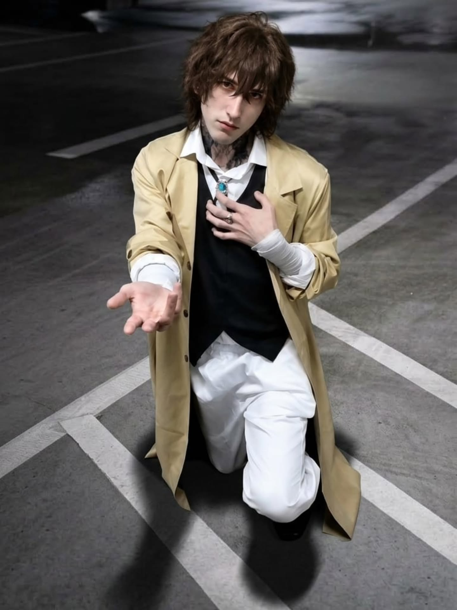
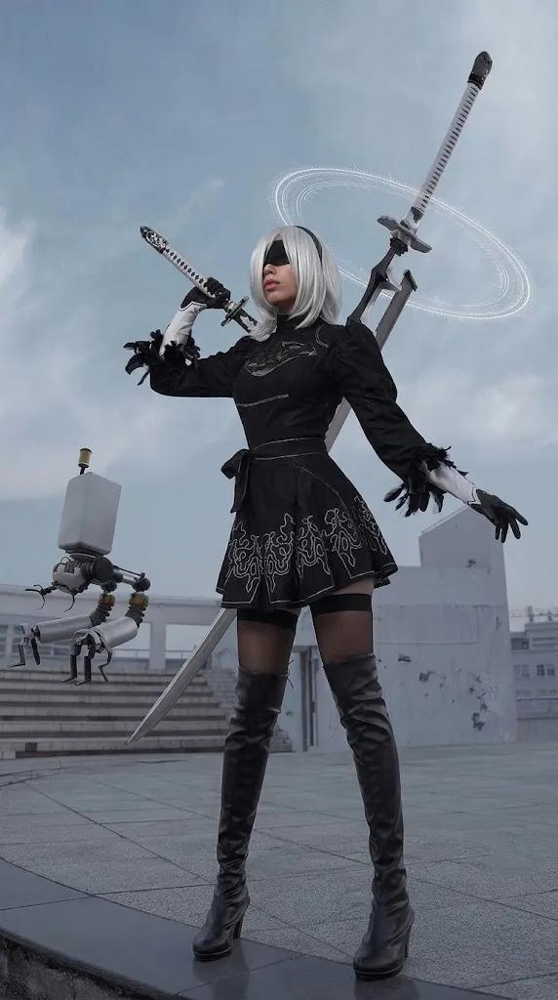
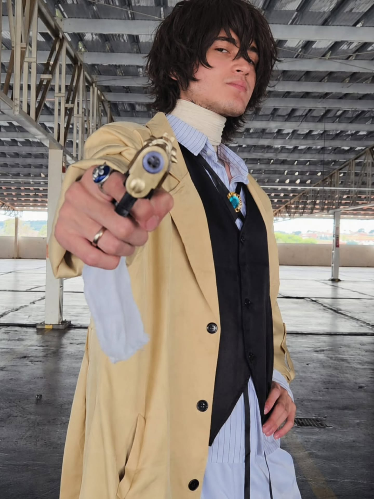
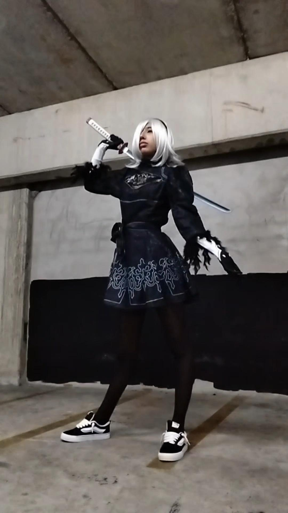

壱
◈
Sites de Portfólio Personalizados
Criação de portfólios únicos com identidade visual personalizada, pensados para destacar o trabalho e a personalidade de cada cliente.
Edição cinematográfica de cosplay e desenvolvimento web sob medida. Crio portfólios únicos, landing pages, interfaces interativas e experiências digitais que ninguém esquece.

ドン 零一番Editor de cosplay. Desenvolvedor web. Estrategista visual. Cada projeto tratado como uma construção única.
Eu observo antes de construir. Analiso a intenção, o público, o sentimento. Depois projeto a experiência.
Sou Mr. Sandman — Digital Creator, Editor Profissional, Cosplayer e Desenvolvedor Web, baseado em São Paulo. Minha formação em Psicologia e ADS me deu dois olhares que uso em cada projeto: um que entende pessoas, outro que entende sistemas.
Como editor, transformo fotografias de cosplay em imagens cinematográficas que pertencem ao universo do personagem. Como desenvolvedor, crio interfaces, animações e experiências digitais que traduzem a identidade de cada cliente — do primeiro esboço à entrega final.
Não entrego templates. Construo experiências sob medida, cada uma com personalidade própria e propósito claro.
Este site é a prova. Cada animação, transição, interação e detalhe visual foi construído à mão — sem frameworks, sem templates.
Eu projeto e desenvolvo experiências digitais únicas, do conceito visual à implementação. Não trabalho com templates prontos — cada projeto é um sistema de design próprio, criado sob medida para o cliente, seu público e sua mensagem.
Traduzo referências, ideias e identidades em sites funcionais, responsivos e visualmente marcantes. Seja um portfólio pessoal, uma landing page de lançamento ou uma experiência interativa completa.
Criação de portfólios únicos com identidade visual personalizada, pensados para destacar o trabalho e a personalidade de cada cliente.
Desenvolvimento de experiências interativas, com navegação diferenciada e elementos que surpreendem o visitante em cada seção.
Design de interfaces atual, elegante e adaptado a todos os dispositivos — desktop, tablet e mobile, sem perder qualidade ou identidade.
Camadas de animações, transições suaves, efeitos visuais e microinterações que tornam a navegação memorável e fluida.
Desenvolvimento de projetos com identidade visual completa — cores, tipografia, elementos gráficos, sons e atmosfera consistentes.
Transformação de referências, briefings e conceitos abstratos em experiências digitais funcionais, navegáveis e prontas para uso real.
Cada projeto tem necessidades e públicos diferentes. Crio soluções específicas para cada contexto, sem fórmulas prontas ou genéricas.
Páginas de alto impacto, focadas em conversão, com narrativa visual clara e chamadas para ação integradas.
Estruturas de navegação não convencionais — laterais, verticais, rituais, imersivas — quando o projeto pede algo além do comum.
Desenvolvimento a partir de referências, moodboards, universos ou conceitos específicos que o cliente traz.
Atendimento personalizado para diferentes perfis — artistas, cosplayers, empresas, criadores de conteúdo, projetos autorais.
Código escrito à mão em HTML, CSS e JavaScript — sem dependência de construtores prontos. Controle total sobre performance e estética.
Cada animação, cada transição, cada microinteração que você vê aqui foi construída do zero. Sem frameworks pesados, sem plugins prontos. É uma amostra real do nível de personalização que aplico em cada projeto.
Cada projeto é um painel de mangá. Cada painel, uma passagem. Passe o cursor e veja a transformação acontecer.


Arraste a lâmina vertical. Veja o momento em que a fotografia se torna universo.

Não existe inspiração sem método. Cada projeto passa por um sistema próprio antes de ganhar vida.
Do tratamento de imagem ao código autoral — ferramentas técnicas que aplico em cada projeto, seja de edição ou de desenvolvimento.
Visualize minha trajetória profissional diretamente aqui, ou faça o download do PDF para arquivo.
Cosplay é rito. Dev é construção. Editor é direção. Tudo parte do mesmo princípio: transformar ideia em experiência.
Como cosplayer, eu sei o peso de cada figurino, cada detalhe, cada noite de trabalho. Como dev, sei o valor de cada linha de código pensada, cada transição calibrada, cada decisão de usabilidade.
Por isso trato cada projeto — seja uma edição de imagem ou um site completo — como algo que vai representar o cliente no mundo. Sem atalhos, sem templates, sem genérico.
「 Você cria o conceito.
Eu construo a experiência ao redor dele. 」
Preencha a carta abaixo. Você receberá uma resposta no e-mail mr.sandman0819@gmail.com em até 48h.